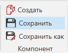

Сохранение компонента |
|
Компонент можно сохранить для загрузки и использования в любой плпнировке, открытой в трехмерном мире. 1.Выберите компонент, который вы хотите сохранить в 3D-мире. 2.На вкладке Моделирование в группе Компонент, сделайте одно из следующих действий: ·Чтобы сохранить компонент в существующий файл, нажмите Сохранить. ·Чтобы сохранить компонент как новый файл, нажмите Сохранить как, а затем сохраните файл.
 |